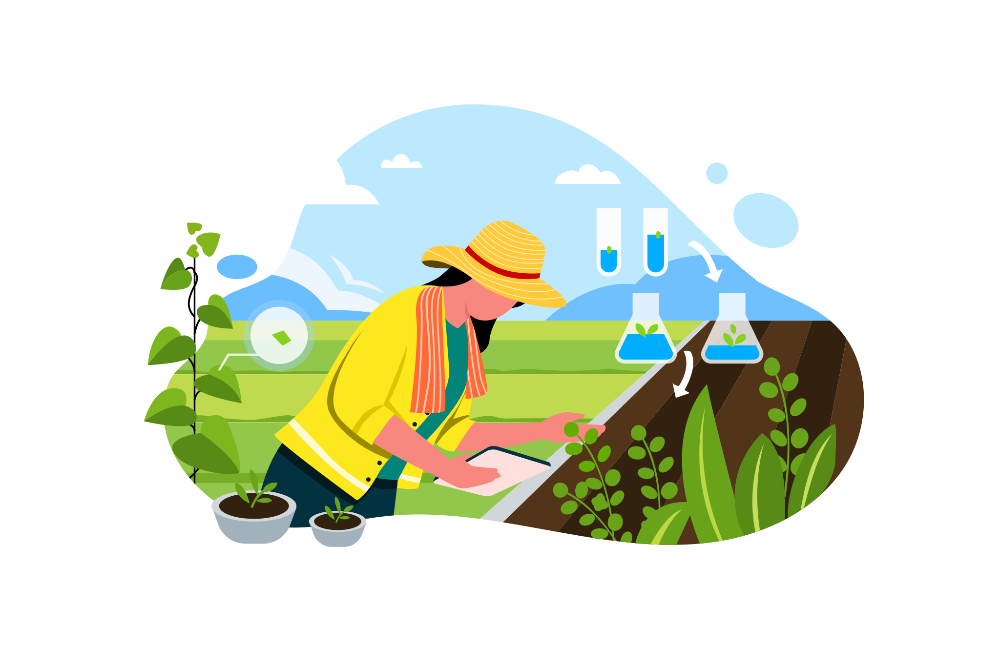
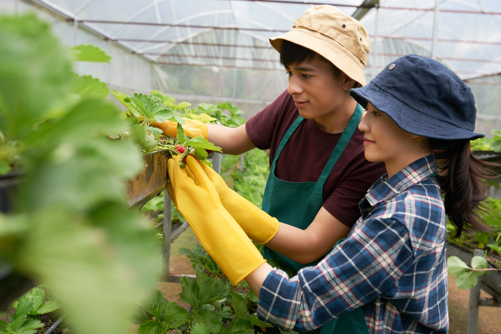

Politeknik Tonggak Equator
POLTEQ Means Quality

Program Studi
English for Bussiness and Proffesional Communication
Bisnis Kreatif
Teknologi Pangan
Teknologi Produksi Tanaman Perkebunan
Informasi
Politeknik Tonggak Equator
POLTEQ Means Quality
Prospek Kerja, Mata Kuliah, dan Kampus Pilihan di Pontianak
Reyven Edward Michael
Penulis
Industri perkebunan merupakan salah satu sektor penting yang mendukung perekonomian Indonesia. Sebagai negara penghasil kelapa sawit terbesar di dunia, kebutuhan akan tenaga profesional di bidang perkebunan terus meningkat setiap tahunnya. Tidak heran jika banyak calon mahasiswa mulai mencari informasi mengenai jurusan perkebunan kelapa sawit, prospek kerjanya, hingga universitas yang menyediakan program studi tersebut. Salah satu pilihan pendidikan vokasi yang dapat dipertimbangkan adalah Program Studi Teknologi Produksi Tanaman Perkebunan (TPTP) di Politeknik Tonggak Equator (POLTEQ) Pontianak. Program studi ini dirancang untuk menghasilkan lulusan yang siap bekerja dan memiliki keterampilan praktis sesuai kebutuhan industri perkebunan modern.

Sumber : iconscout.comJurusan Teknologi Produksi Tanaman Perkebunan merupakan program studi yang mempelajari teknik budidaya, pengelolaan, serta pengembangan tanaman perkebunan secara profesional. Mahasiswa tidak hanya belajar teori di kelas, tetapi juga mendapatkan pengalaman praktik langsung di lapangan.
Materi yang dipelajari umumnya meliputi:
Dengan kombinasi teori dan praktik tersebut, lulusan memiliki kompetensi yang sesuai dengan kebutuhan perusahaan perkebunan nasional maupun internasional.

Sumber : https://www.magnific.com/free-photo/side-view-two-young-farmers-cultivating-strawberry-greenhouse_5765968.htm#fromView=keyword&page=1&position=6&uuid=a87c9be3-0189-426e-891d-564c75800bc3&query=FarmersSalah satu pertanyaan yang paling sering diajukan calon mahasiswa adalah, "Jurusan perkebunan kerja apa?" Lulusan jurusan perkebunan memiliki peluang karier yang cukup luas, terutama karena sektor agribisnis dan perkebunan terus berkembang di Indonesia. Beberapa profesi yang dapat ditekuni antara lain:
Banyak calon mahasiswa juga mencari informasi mengenai jurusan perkebunan ada di universitas mana saja. Di Indonesia, program studi yang berhubungan dengan perkebunan dapat ditemukan di berbagai perguruan tinggi, baik negeri maupun swasta. Namun, bagi calon mahasiswa yang ingin mendapatkan pendidikan berbasis praktik dan dekat dengan pusat industri perkebunan Kalimantan Barat, Program Studi Teknologi Produksi Tanaman Perkebunan (TPTP) di Politeknik Tonggak Equator (POLTEQ) Pontianak menjadi salah satu pilihan yang layak dipertimbangkan. Lokasinya yang berada di Kalimantan Barat memberikan keuntungan tersendiri karena mahasiswa dapat lebih dekat dengan aktivitas industri perkebunan yang berkembang pesat di wilayah tersebut.

POLTEQ is here!

Program Studi TPTP di POLTEQ memiliki fokus pada pengembangan keterampilan teknis dan kompetensi lapangan yang dibutuhkan industri saat ini. Beberapa keunggulan yang ditawarkan antara lain:
Dengan pendekatan pendidikan vokasi, mahasiswa dipersiapkan untuk siap kerja setelah lulus.
Indonesia merupakan salah satu negara dengan potensi perkebunan terbesar di dunia. Komoditas seperti kelapa sawit, karet, kakao, kopi, dan berbagai tanaman perkebunan lainnya terus memberikan kontribusi besar terhadap perekonomian nasional. Pertumbuhan sektor ini membuat kebutuhan tenaga kerja yang kompeten semakin meningkat. Oleh karena itu, lulusan jurusan perkebunan memiliki peluang karier yang menjanjikan dalam jangka panjang.
Bagi Anda yang sedang mencari informasi mengenai jurusan perkebunan di Indonesia, jurusan perkebunan kelapa sawit, atau ingin mengetahui jurusan perkebunan kerja apa, Program Studi Teknologi Produksi Tanaman Perkebunan (TPTP) di Politeknik Tonggak Equator (POLTEQ) Pontianak dapat menjadi pilihan yang tepat. Melalui kurikulum yang berorientasi pada praktik dan kebutuhan industri, mahasiswa dibekali kompetensi yang relevan untuk menghadapi dunia kerja. Selain itu, berkembangnya sektor perkebunan Indonesia membuka peluang karier yang luas bagi para lulusan di masa depan.